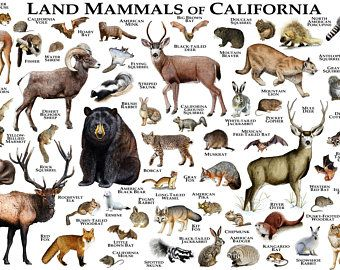
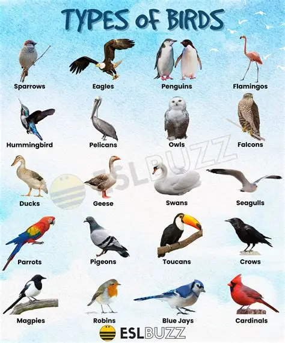
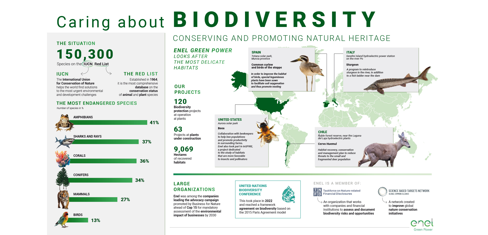

Mammals
The region of mammals and the species within them is a diverse and complex topic. Mammals are classified into three main groups: Monotremes, Marsupials, and Placentals, each with unique characteristics and habitats. For example, Monotremes include the platypus and echidna, Marsupials like kangaroos and koalas, and Placentals such as mice and whales.

Birds
Birds are found in every country and major habitat, from the lowest deserts to the highest mountains. Forests are the most species-rich habitat, supporting 78% of all bird species. The global distribution of these habitats drives patterns of bird diversity, with tropical countries, especially in South America, supporting the highest species richness. A total of over 11,000 different species of birds are recognized, with the majority occurring in continental regions. Birds occupy a huge variety of habitats and are found at the extremes of latitude and land elevation.

Reptiles & Amphibians
The region of interest for amphibians and reptiles is characterized by its diverse ecosystems, including wetlands, deserts, and mountainous areas. These animals are crucial for maintaining the balance of ecosystems, serving as both predators and prey. The distribution of amphibians and reptiles is closely tied to the health of their habitats, with healthy wetland environments supporting a variety of species. The herpetofauna in this region exhibits dramatic fluctuations in population and species richness, reflecting the dynamic nature of their habitats. National Park Service

Conservation Tips
Forest conservation is about protecting and managing forests to maintain their biodiversity, health, and resources for future generations. Here are some simple yet effective tips: Practice Sustainable Use – Harvest timber and forest products in ways that allow natural regeneration. Support Reforestation – Plant native trees to restore degraded areas and improve ecosystem balance. Prevent Deforestation – Reduce unnecessary clearing for agriculture or development by promoting alternative land-use methods. Protect Wildlife Habitats – Maintain natural forest areas to safeguard biodiversity. Reduce Waste & Paper Use – Opt for recycled products and digital alternatives to lower demand for logging.
